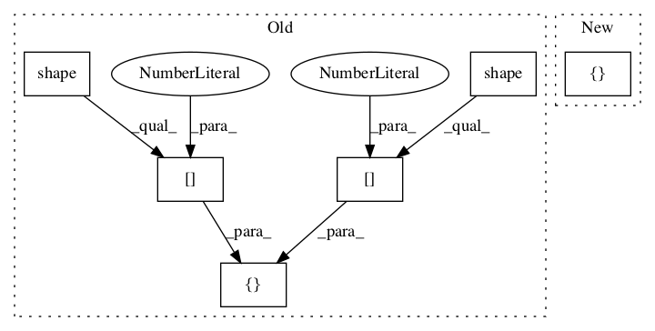

8259acbe363ecc589103678cc7402c2cf54ea564,gpflow/kernels/statics.py,White,K,#White#Any#Any#Any#,25

Before Change
d = tf.fill(tf.stack([tf.shape(X)[0]]), tf.squeeze(self.variance))
return tf.matrix_diag(d)
else:
shape = tf.stack([tf.shape(X)[0], tf.shape(X2)[0]])
return tf.zeros(shape, dtype=X.dtype)
After Change
d = tf.fill((X.shape[0], ), tf.squeeze(self.variance))
return tf.linalg.diag(d)
else:
shape = [X.shape[0], X2.shape[0]]
return tf.zeros(shape, dtype=X.dtype)
class Constant(Static):
In pattern: SUPERPATTERN
Frequency: 3
Non-data size: 6
Instances
Project Name: GPflow/GPflow
Commit Name: 8259acbe363ecc589103678cc7402c2cf54ea564
Time:
Author: null
File Name: gpflow/kernels/statics.py
Class Name: White
Method Name: K
Project Name: broadinstitute/keras-rcnn
Commit Name: 3c397401a06de998cd99a6da2e97d4daecb44c9c
Time:
Author: null
File Name: keras_rcnn/backend/common.py
Class Name:
Method Name: bbox_transform_inv
Project Name: broadinstitute/keras-rcnn
Commit Name: 3c397401a06de998cd99a6da2e97d4daecb44c9c
Time:
Author: null
File Name: keras_rcnn/backend/common.py
Class Name:
Method Name: clip